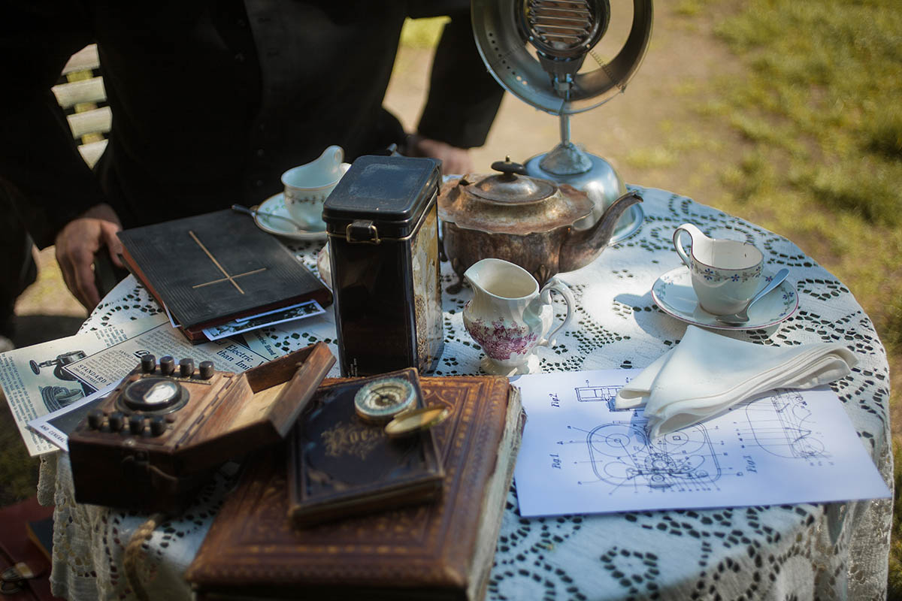
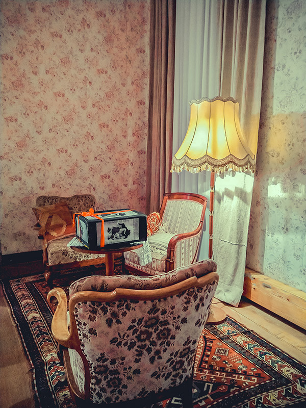

-
Brennende Themen
production design
A humorous mockumentary series set in 1932, Germany. A small, bohemian town, far away from the nazi regime: the local priest and a bored housewife start their own talk show about love, sex, new technology and taboo topics at home, evolving in a love story.
A comedic, semi-authentical take on the 30's uptight prudeness and slowly approaching sexual revolution. Shot in black and white.
2019 - ongoing
Their filming set up in her garden 1932
Microphone resenbling a christian monstranz
- 
Historical camera operating manual

Vintage vibrator advertising
Hidden frivolous objects

Her living room 1915 (cutback scene)
- 